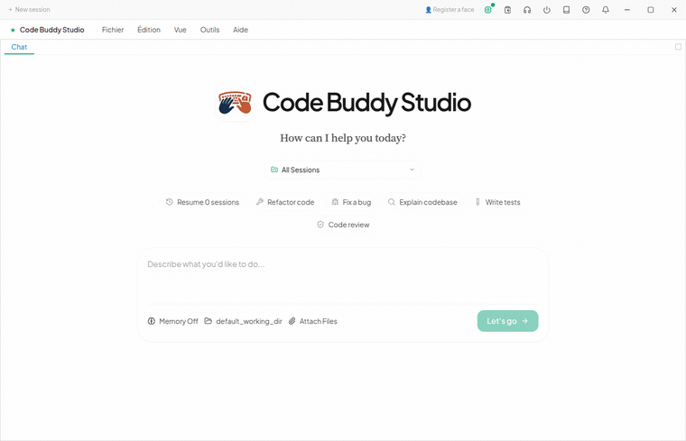
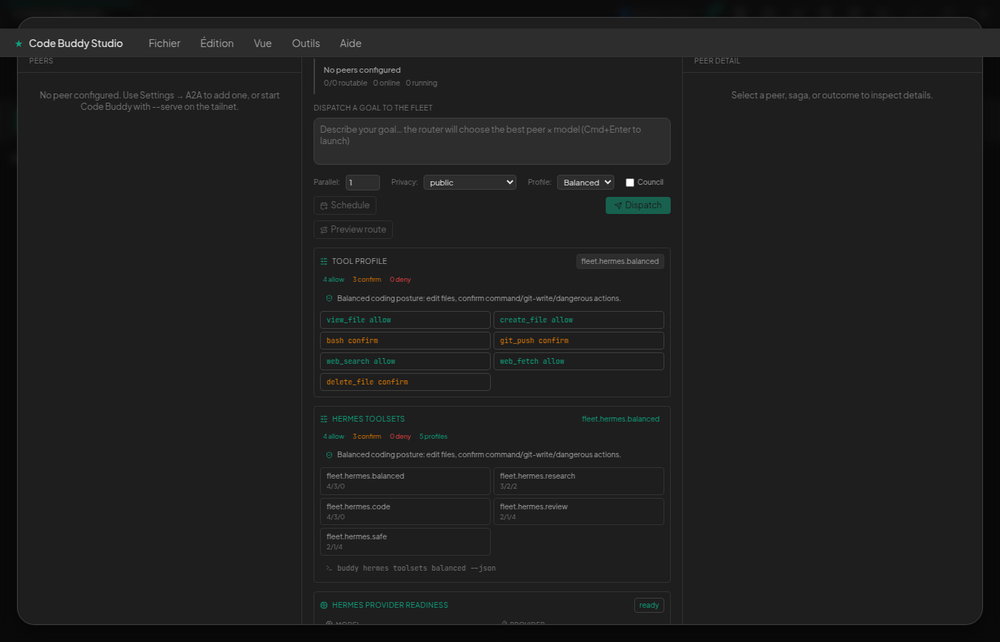
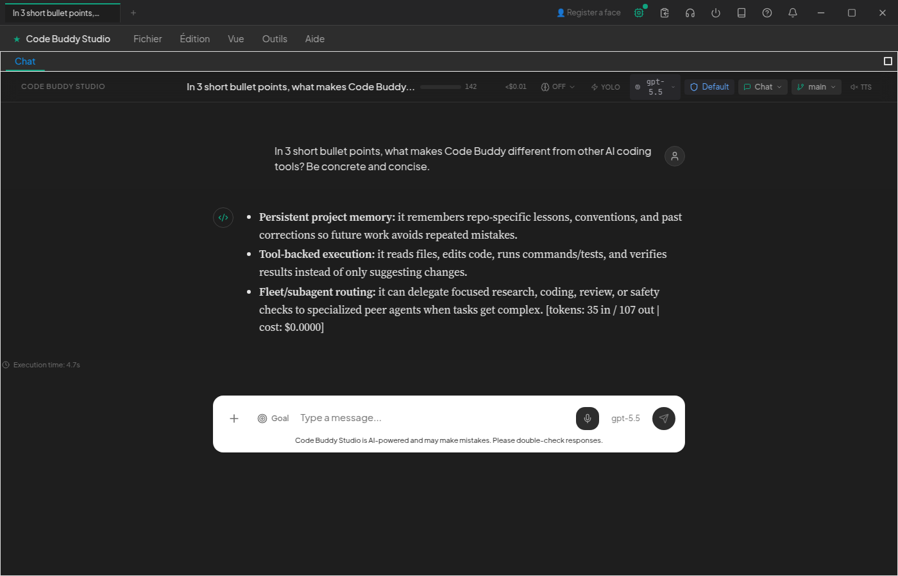

The AI coding agent that runs free, on your own machine.
Watch a local model reason on screen, then use real tools to do the work —
no cloud, no API bill, ~$0. Or bring any of 15 providers with
automatic failover. From your terminal, a desktop app, your phone, or a 24/7 service.

Real gpt-5.5 in the desktop app — the answer streams in, cost $0.0000.
One engine. Everywhere you work.
Free & local-first
Runs entirely on local Ollama ($0), any of 15 providers with auto-failover, or a flat-fee ChatGPT Plus/Pro login — no per-token metering.
Reasoning you can watch
Local models think step-by-step on screen, then call tools to act — edit files, run commands, search the web, verify results.
~110 tools, MCP & skills
Edit, shell, web search, browser, PDFs/Office, a skills marketplace, and MCP connectors — extend it to your stack.
Multi-AI fleet
Peers on your network observe each other live and call each other's models & read-only tools — one machine's spare GPU becomes everyone's.
24/7 autonomy
A background service claims & runs tasks free-first on local models — TTL leases, DAG deps, a workers→verifier→synthesizer swarm.
Personal companion
Optional: bidirectional voice, opt-in camera/presence, persistent memory, and 20+ messaging channels.
The Cowork desktop cockpit
Chat, tools, traces, workflows, settings, permissions, models — against the same core engine as the CLI.


$0.0000

In your pocket — over Telegram
The same agent as the terminal, reachable from your phone as a messaging bot. The prompt & tools scale to each question — instant for plain chat, loading tools on demand (the same pattern as Codex / Claude). You can also talk to it: a voice note in → speech-to-text (faster-whisper) → reply by voice (Piper TTS), all local / $0 (needs the local voice engines; degrades to text otherwise). Real, unedited captures (the bot is named “Lisa” here).

web_search tools, only when asked
view_file — then introduces its recursive self-improvement →
lessons_* loop extracts RULE / PATTERN / CONTEXT lessons into .codebuddy/lessons.md (project + global). Matches its real source.What's shipped — not roadmap
- $0 local coding agent — a local model reasons, then calls tools to do real work.
- ChatGPT Plus/Pro → gpt-5.5 at $0 —
buddy login, flat-fee, no API key. - Goal loops (Ralph loop) — a judge re-checks completion each turn and auto-continues until done.
- Multi-AI fleet —
peer.chat/peer.tool.invokeacross your network. - 15 providers with failover & circuit breakers; ~110 tools, MCP, skills.
- 27K+ Vitest tests wired to CI.
Honest about scope — see the parity doc for exactly what's full vs. in-progress.
Install in seconds
# Free & local: point at a local Ollama, $0
npm install -g @phuetz/code-buddy
export CODEBUDDY_PROVIDER=ollama
buddy
# …or log in with your ChatGPT Plus/Pro subscription (no API key)
buddy login && buddyNode ≥ 18 for the CLI · Node ≥ 22 for the desktop app. Run buddy doctor to check your environment.